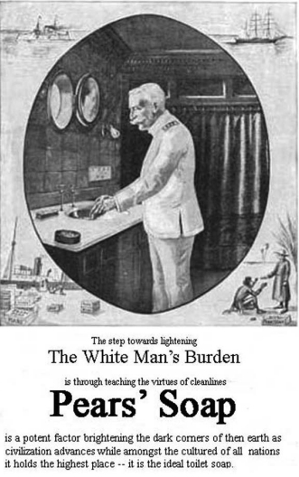

Dehumanisasi merupakan tindakan, sikap dan fenomena kehidupan dalam konteks interpersonal maupun antarkelompok yang terjadi di luar domain kekerasan dan konflik, dan hal ini memiliki dimensi sosial-kognitif di samping faktor penentu motivasi yang biasanya ditekankan (Haslam, 2006). Dehumanisasi atau pengawamanusiaan juga dapat diartikan sebagai suatu ketidakadilan, diskriminasi, kekerasan, eksploitasi dan penindasan antar sesama manusia (Freire,2008).
Dehumanisasi dalam sejarah perkembangan peradaban manusia menjadi permasalahanyang sentral, khususnya praktik rasial bangsa Eropa terdahap penduduk di wilayah-wilayah jajahannya. Salah satu faktor yang melandasi adanya dehumanisasi ialah kemajuan teknologi, modernitas budaya dan peradaban. Hal ini menjadi faktor penting munculnya anggapan sebagai bangsa/negara superior. Anggapan sebagai bangsa suprerior ini diyakini oleh beberapa Negara-negara di Eropa khususnya pada negara-negara maju yang melakukan praktik kolonialisme.
Keyakinan supreriortas ini salah satunya menganggap peradaban pribumi khususnya bangsa Asia-Afrika tidak akan berkembang hingga tingkat maju dan beradab seperti peradaban orang-orang barat (Eropa). Hal ini dilatarbelakangi dari zaman Renaisans hingga akhir abad-18, yakni orang-orang Eropa pada masa itu cenderung mengazimatkan bangsa-bangsa pribumi/bumi putera yang mereka temui di tanah jajahan dengan memandang kaum pribumi tersebut sebagai representasi kemanusiaan yang cacat dan sebagai objek pendukung peradaban yang tidak beradab (Carey & Noor, 2022).
Praktik rasisme ilmiah bangsa barat terhadap kaum pribumi di tanah jajahan diimplementasikan melalui propaganda kebersihan dan kesehatan. Persepsi tentang kebersihan dan kekotoran digunakan untuk menggambarkan, memuji, dan mencela individu dan kelompok tertentu yang memiliki latar belakang sosial, ekonomi, agama, atau etnis yang berbeda. Praktik rasisme ilmiah melalui propaganda/kampanye kebersihan terdiadi pada abad-19 yakni ketika penemuan ekstrak kopra dari minyak kelapa yang menjadi bahan baku sabun mandi di tahun 1840 sekaligus dijadikan sebagai keunggulan, kemajuan budaya dan peradaban.
 Praktik Rasial Dalam Iklan Sabun Mandi “Pears Soap” Sumber: (Dijk, 2011:11)Propaganda atau kampanye kesehatan melalui iklan sabun mandi berdampak terhadap pribumi di kawasan Asia-Afrika yang dianggap kotor oleh orang-orang barat (Eropa). Salah satu faktor yang mendasari anggapan kotor tersebut yakni perbedaan warna kulit pribumi yang lebih gelap. Hal ini dianggap menjadi beban orang kulit putih pada masa itu, sehingga indikator kebersihan identik pada warna kulit putih. Maka iklan sabun pada masa itu menjadi media praktik rasial-ilmiah terhadap orang-orang pribumi yang dianggap kotor, terbelakang bahkan praktik rasial-ilmiah tersebut dianggap sebagai lelucon pada masa itu (Dijk, 2011).
Praktik rasial ilmiah melalui kampaye kebersihan pada iklan sabun mandi juga terjadi pada dewasa kini. Salah satunya pada kasus iklan sabun merek “X” di tahun 2017 yang diyakini dalam video iklan sabun tersebut terdapat unsur-unsur rasial ilmiah. Adanya unsur rasial-ilmiah yang mengarah pada warna kulit dalam video iklan sabun merek “X” tersebut dikonfirmasi oleh salah satu professor asal Emory University bernama Abigail Sewell. Menurut Prof. Abigail Sewell, bahwa tim marketing produk sabun “X” pada dasarnya mempratikkan tindakan rasisme dan diskriminasi warna kulit. Tubuh yang bersih bukanlah tubuh yang hanya berkulit putih serta kulit yang berwarna hitam tidak serta-merta merepresetasikan kekotoran (Hestianingsih, 2017)
Berdasarkan studi kasus adanya praktik rasial-ilmiah dan diskriminasi warna kulit dalam video iklan sabun mandi merek “X” di tahun 2017, hal ini menandakan bahwa praktik rasial-ilmiah yang mengarah pada anggapan kotor dan indikator kebersihan pada salah satu warna kulit yang telah terjadi sejak abad-19 masih diwariskan dan diyakini hingga dewasa kini. Hal ini merupakan paradigma dehumanisasi yang harus dihilangkan atau dihapuskan, salah satunya yaitu melalui pendidikan atau edukasi. Pendidikan atau edukasi memiliki nilai-nilai humanisasi atau kemanusiaan sebagai antitesa dari pemikiran atau tindakan dehumanisasi, oleh karena itu dengan melalui pendidikan atau edukasi dapat mengarahkan pada kondisi kehidupan yang humanis. Kehidupan yang humanis yaitu terhapusnya praktik penindasan antar sesama manusia serta tidak adanya kondisi pihak tertindas maupun pihak penindas (Freire, 2008).
Pendidikan atau edukasi yang efektif untuk menghapus paradigma dehumanisasi dan praktik rasial pada dewasa kini yaitu melalui pembelajaran sejarah pada generasi muda tentang topik permasalahan kemanusiaan dan kebersihan di masa lalu. Edukasi melalui pembelajaran sejarah dapat berdampak pada sisi kemanusiaan setiap individu. Melalui pengkajian peristiwa mampu melatih cara berpikir dan memperkuat sisi kemanusiaan setiap individu (Wineburg, 2006).
Munculnya sisi kemanusiaan saat proses pengkajian peristiwa sejarah diakibatkan adanya historical empathy, yaitu proses memahami pemikiran, ikut merasakan perasaan, pengalaman, serta tindakan orang-orang masa lalu dalam konteks tertentu. Pendekatan dengan edukasi bertujuan untuk memberikan sensasi historical empathy kepada peserta didik dalam mengembangkan keterampilan berpikir sejarah dengan menggunakan metode disiplin sejarah. Konseptualisasi historical empathy sebagai bagian dari edukasi diperlukan untuk memberi ruang bagi serangkaian perasaan, emosi, dan koneksi bersamaan dengan penelitian sejarah. Pendidikan digunakan sebagai perubahan nilai, sikap, dan perilaku atas masa lalu untuk masa depan dengan terbuka dan peduli terhadap perspektif masa lalu yang buruk salah satunya rasisme.
Sumber
Carey. P, & Noor. F. A, (2022). Ras, Kuasa Dan Kekuasaan Kolonial di Hindia Belanda 1808-1830. Jakarta: Gramedia.
Dijk. K. V & Taylor. J. G, (2011). Cleanliness and Culture: Indonesian Histories. Koninklijk Instituut voor Taal-, Land- en Volkenkunde (KITLV, Royal Netherlands Institute of Southeast Asian and Caribbean Studies).
Freire. P, (2008). Pendidikan Kaum Tertindas. Jakarta: Pustaka LP3ES.
Haslam, N. (2006). Dehumanization: An Integrative Review. Personality and Social Psychology Review, 10(3), 252–264. https://doi.org/10.1207/s15327957pspr1003_4
Wineburg. S, (2006): Berpikir Historis: Memetakan Masa Depan, Mengajarkan Masa Lalu. Jakarta: Yayasan Obor.